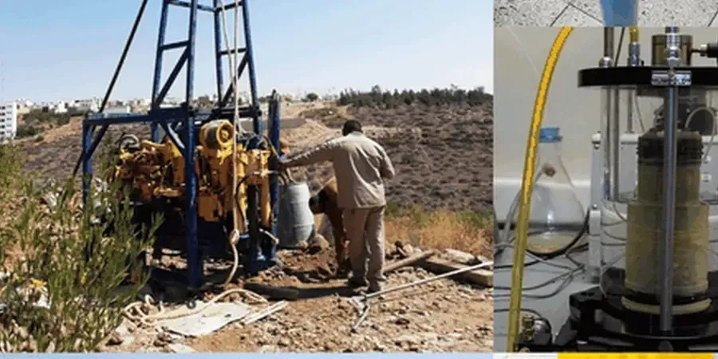

Our Fredericton office provides comprehensive geotechnical services tailored to the region's unique subsurface conditions. From initial site characterization and foundation design to construction monitoring and code-compliant reporting, we support residential, commercial, and infrastructure projects throughout the capital region. Our team combines consolidated regional experience with calibrated laboratory equipment to deliver reliable, actionable recommendations. Whether you are planning a new development or assessing an existing site, we offer integrated solutions that address local soil behavior, groundwater, and regulatory requirements. Explore our approach to residual soil characterization and foundations fill for typical Fredericton projects.

Technical details of the service in Fredericton
Live process video
Typical technical challenges in Fredericton
Our team brings deep familiarity with Fredericton's geology and regulatory environment, having completed numerous projects in the region—from riverside developments to highway corridors. We maintain a fully equipped soil mechanics laboratory calibrated to Canadian standards, ensuring accurate index and strength properties. Our engineers work closely with local contractors, the City of Fredericton, and provincial transportation authorities to streamline permitting and construction. By combining site-specific analysis with practical experience, we deliver geotechnical solutions that are both technically sound and locally informed.
Our services
FAQ
What are the most common foundation challenges in Fredericton?
The primary challenges are variable till density, shallow groundwater, and the presence of compressible alluvial clays near the river. Many sites require careful evaluation of settlement potential and bearing capacity. For shallow foundations, we often recommend controlled fill or Improvement to mitigate differential settlement. Deep foundations may be needed where bedrock is deep or where soft layers are thick.
How does seasonal flooding affect geotechnical investigations in the Saint John River valley?
Spring freshet and heavy rainfall can raise groundwater levels significantly, impacting excavation stability, basement waterproofing, and foundation drainage design. Our subsurface investigations account for seasonal fluctuations by monitoring piezometers over several months. We also assess floodplain risks and recommend appropriate freeboard and drainage measures to protect structures.
Which building code governs foundation design in Fredericton?
Foundation design in Fredericton is governed by the National Building Code of Canada (NBCC 2020), adopted by New Brunswick. This code specifies minimum requirements for geotechnical investigations, bearing pressures, and seismic design. Local amendments may apply, and we ensure our reports comply with both provincial and municipal regulations.
What typical soil conditions are encountered for residential subdivisions in Fredericton?
Residential subdivisions often encounter silty sand till with cobbles, underlain by bedrock at variable depths. In newer developments near the river, soft alluvial clay or organic silt may be present. Groundwater is usually within 2 m of the surface. Our investigations focus on compaction characteristics, frost susceptibility, and drainage to support road subgrade, utility trenches, and shallow foundation design.